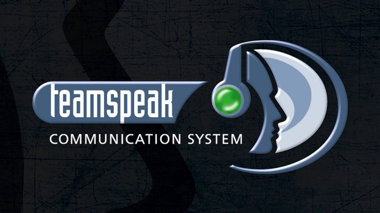

Team Speak 3

TeamSpeak 3 to komunikator głosowy umożliwiający prowadzenie rozmów przez Internet. Znajduje zastosowanie podczas zdalnych konferencji lub wieloosobowych gier rozgrywanych w sieci.
Wystarczy zaopatrzyć się w zwyczajne słuchawki i mikrofon, aby w czasie rzeczywistym komunikować się ze znajomymi podczas grania w swoją ulubioną grę online. TeamSpeak umożliwia stworzenie skrótów klawiszowych, użycie różnych kanałów komunikacji oraz nagrywanie prowadzonych rozmów.
Wystarczy zaopatrzyć się w zwyczajne słuchawki i mikrofon, aby w czasie rzeczywistym komunikować się ze znajomymi podczas grania w swoją ulubioną grę online. TeamSpeak umożliwia stworzenie skrótów klawiszowych, użycie różnych kanałów komunikacji oraz nagrywanie prowadzonych rozmów.
Discord
Discord to komunikator stworzony specjalnie z myślą o graczach. Tym, co wyróżnia go na tle konkurencji w postaci TeamSpeak, Ventrilo czy Skype jest znacznie mniejsze zużycie zasobów systemowych, co ma istotny wpływ na jakość rozgrywki, szczególnie, gdy posiadamy komputer o nieco słabszych parametrach.
Skype

Skype – komunikator internetowy oparty na technologii przetwarzania danych w chmurze. Skype umożliwia prowadzenie darmowych rozmów głosowych oraz obserwację rozmówcy poprzez kamerę internetową, a także płatnych rozmów z posiadaczami telefonów stacjonarnych lub komórkowych za pomocą technologii VoIP (Voice over IP) tzw. usługa SkypeOut.